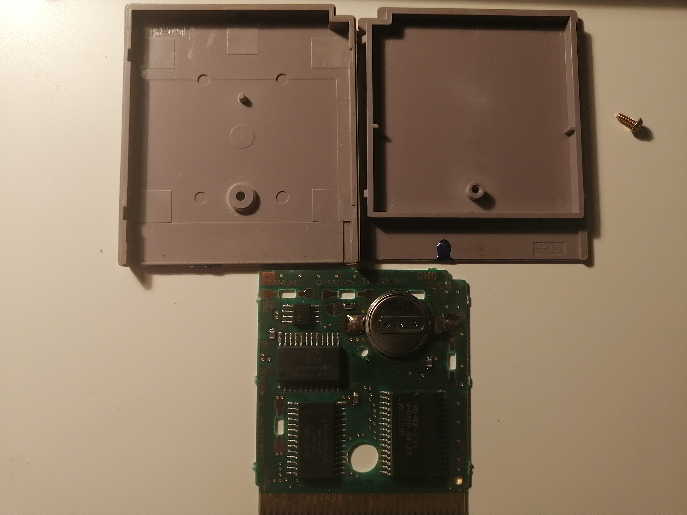

FR
Today I cleaned a not so good looking Gameboy cartridge. I bought this Super Mario Land 2 game at a store in 2017 (?) for $10 CAD. Why did I pick this cartridge in horrible condition? Because all of the games the store was selling were "shovelware" type games, and this was the only good game aside from Tetris that I could find.

Not only is the front label half destroyed, there is some blue substance on the bottom of the cartridge, which I'm guessing is nail polish.
The game also has issues loading correctly, which is probably a problem with the pins, and it has problems saving, which is a battery problem.
I opened the cartridge to take a look on the inside.

You can probably spot a blue spot on the inside. There is also blue substance at the bottom of the cartridge (the plastic which is supposed to be next to the pins) but it
is hard to see on the picture. Thankfully I did not spot any blue substance on the pins or on the board.
Now, removing the blue substance is gonna be tough, as I can't just scratch it of with a screwdriver as it will also scratch the plastic. As
I couldn't find a solution right away, I moved on to other things.
I read on iFixit that GameBoy cartridges take CR2032 batteries. As I only had CR2025's, I decided to pass. Unfortunately for me, I found out later on that
that CR2025's were actually the correct battery type according to many websites. Oh well, I guess I'll try again tomorrow.
I used isopropyl alcohol to clean the board (especially the pins). That's pretty much all I've done so far.
Did it work? Well... I don't see the Nintendo logo glitching at the beginning as I often see it happen, which is good I suppose. But the game did freeze after the logo during my first try, so I don't know if it worked too well, but it is better than before, that's for sure.

Welcome to the Consoles Repair Logs! This is the place where I will document my experience repairing video game consoles.
I recently acquired 4 Nintendo DS's where 3 has some kind of damage.


Every system is able to read both DS and GameBoy Advance games. The grey one, however, will eat your DS cartridge (force is needed to pull the cartridge out of the slot after ejection). The pink system seem to be in perfect working condition. The Mijumaru system has a damaged top screen and a scratched up bottom screen. I think the scratched part is the screen protector. I will remove it and see how it looks under it. The grey one has a damaged top screen and no audio, and the turquoise one has a broken hinge and very yellow displays (especially the top one).
I am hoping that a some of the display issues are caused by a bad connection, as it would be an easy fix. Otherwise I would have to order replacement screens. The Mijumaru system will definitively need a replacement screen if I want to get rid of the dark spot.
Cosmetically speaking, there are a lot of issues too, but I won't worry about that for the moment.
Fun fact: Due to the fact that I did not own a charger for the original DS, I used an universal battery charger (for mobile phones, I think) to charge the battery. It worked! I'm not sure if I can recommend you doing the same though. Do this at your own risk.